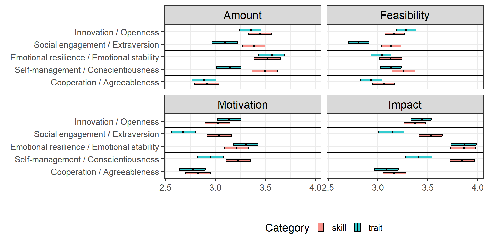

Social, emotional, and behavioral skills in adolescence
Who am I?
- Assistant Professor at the University of Padova
- Psicostat core team member

- Memory & learning lab member
What I do
- SEB skills
- Measurement
- Change goals
- Learning and achievement
- Methodology
- Meta-research
- Psychometrics
- Statistical methods
- Geographical psychology
Results

Method and people
A brief definition of the trait/skill: “Whether someone ‘tend to behave’/‘is capable of behaving’ in a social, assertive, and energetic way[, when they want or need to do so]”
- Amount: “How much would you like to increase your level of [skill/trait name]?”
- Feasibility: “How much do you think you could increase your level of [skill/trait name] during the next year, if you tried to do so?”


A first study on college students3 


- N = 264 (F = 184, IT = 276, US = 252)
- Age = 20.83 (sd = 2.68 [18; 46])

Feraco, Hudson & Soto (2025) Personality and Individual DifferencesMoving toward adolescents - Students, teachers, and parents opinions 

| Students | Parents | Teachers | |
|---|---|---|---|
| N | 676 | 460 | 704 |
| Females | 424 | 293 | 430 |
| Males | 250 | 167 | 265 |
| Age | 16.75 (1.53) | 50.19 (5.78) | 38.57 (11.37) |
What are the opinions of high school students about changing their traits or skills?
What about their parents’ and teachers’ opinion about changing their students/children traits and skills?
Feraco, Jach ... & Soto (in prep)More about teachers 

| Variable | |
|---|---|
| N (Females) | 1480 (1270) |
| Age (Mean) | 49.12 (9.72) |
| Experience (Mean) | 17.44 (11.27) |
| Class Time (Mean) | 10.89 (7.73) |
| Grade: Primary (2) | 518 |
| Grade: Middle (3) | 364 |
| Grade: High (4) | 432 |
| Role: Support (1) | 374 |
| Role: Curricular (2) | 1016 |
Pellegrino ... & Feraco (in prep)Thank you all!

Free slides here!
Data, code, and materials needed to reproduce these slides are available at: https://github.com/feracotommaso/Slides/
Social, emotional, and behavioral skills
Definition
Normative change
Change goals